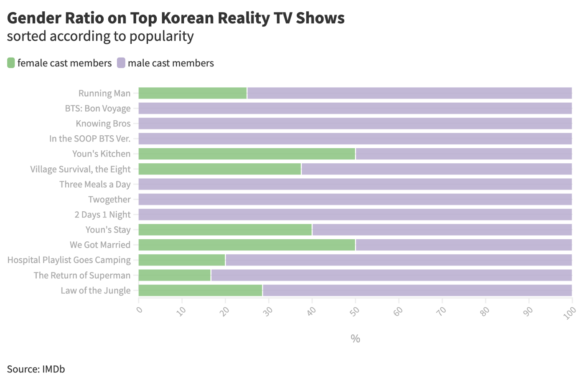
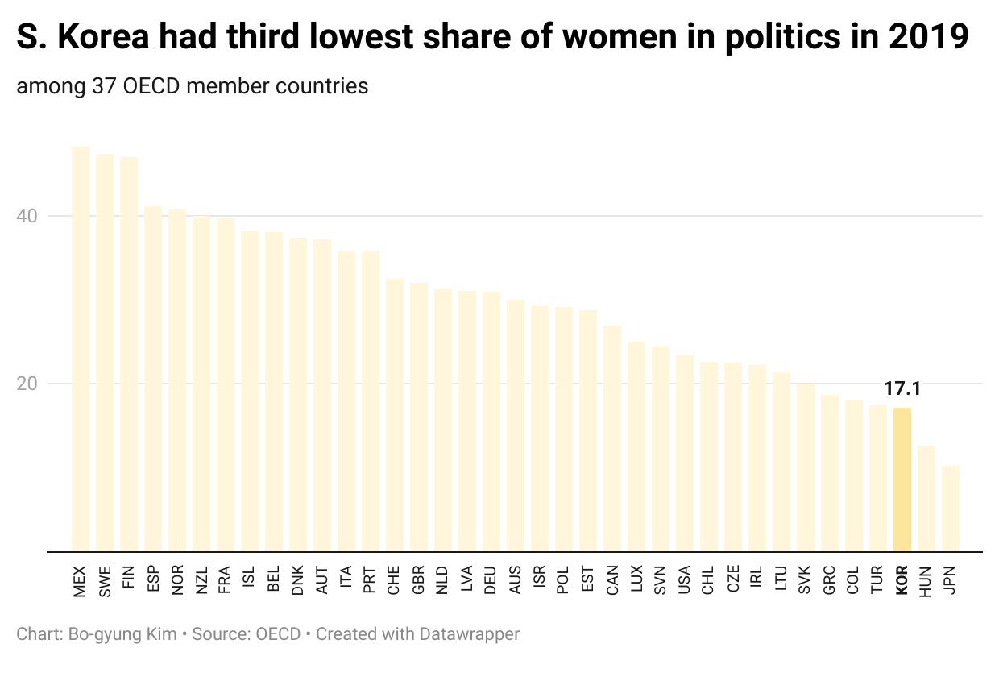

This story was written for the Columbia Graduate School of Journalism
NEW YORK -- South Korean veteran actress Youn Yuh-jung reached a new high in her 56-year-long career at Sunday’s Oscars when she took home the best supporting actress award for her performance in “Minari”. Youn, 73, made history by becoming the first-ever Korean actor to clinch an Academy Award. Her energy in the movie as a halmoni, Korean for grandmother, who comes to the U.S. to help her immigrant daughter’s family achieve the American Dream won over movie fans worldwide.
Youn’s success in film also comes as a major boost for women in Korea’s show biz industry. There has been a steady shift in the roles female celebrities are given on Korean television programs. Most TV shows with top viewership still feature more men than women in leading positions — from game shows to dramas. Still, Korean TV is improving in gender representation slowly but surely, experts told the Columbia Journalism School.
“In the past few years,” said Rhie seung-han, a Korean TV columnist, in an email, “there has been seeing a gradual expansion in the ratio of female cast members.” Rhie added, “Change is slow, but what’s meaningful is that the trend is continuing.”
Shows rolled out recently have more female cast members compared to 2015 when veteran female comedian Park Mi-sun raised the alarm over diminishing opportunities for female TV personalities. Variety show “Hangout with Yoo,” hosted by top comedian Yoo Jae-suk, was one of the shows that led the trend last year. The show was centered around the debut of a K-pop girl group called Refund Sisters. The group composed of four legendary and up-and-coming divas — Uhm Jung-hwa, Lee Hyori, rapper Jessi and Hwasa of girl group MAMAMOO — were unapologetic about owning their bad girl vibes and strong characters. The Saturday night show recorded top ratings in a competitive pool of television shows vying to grab the audience’s attention on weekends, according to Nielsen Korea, which provides information on TV ratings.
Reality TV shows that involve more talking than tussling have also helped create a playing field, said Lee Gyu-tag, assistant professor of cultural studies at George Mason University Korea. For example, two of the five main cast members are women on the reality TV show “Omniscient Interfering View” that began in late 2017, are women. And the two lead hosts of “Where is My Home” launched in 2019 are female comedians.
Uneven playing field
In 2015, all-male cast shows swept the Korean show biz, prompting Park Mi-sun to say: “We [women] can be funny on variety shows, but we aren’t given the same opportunities as male celebrities.”

Six years have passed since then and more female celebrities are returning to television from their YouTube and podcast gigs, which they turned to in order to stay afloat. Still, 6 out of 10 most popular Korean reality TV shows on IMDb’s ranking had all-male casts, according to IMDb. In terms of gender ratio, women made up around 19 percent of the casts on the top 14 reality TV shows, the analysis showed.
“There is a long history of ‘standardization’ of straight men without disabilities,” Rhie said of Korean show biz. On top of that perception, the high ratio of men in decision making positions in TV production has allowed more opportunities for more male celebrities to thrive, ultimately creating a pool of mate-dominated top TV personalities with more men than women, Rhie said. “That’s the reality.”

Considering that television often reflects society and culture, it’s not surprising that Korea’s political scene mirrors the gender dynamics in the media landscape. Women in Korean politics made up around 17 percent in 2019, according to the Organisation for Economic Co-operation and Development’s latest data. That was nearly half of the average share of the surveyed countries. South Korea had the third-lowest percentage of women politicians among 37 OECD member countries, the data showed.
What’s Next
A record number of Korean female legislators was voted into office in last year’s legislative elections, indicative of the slow but steady break away from traditional gender roles.
As gender dynamics in the casts of Korean TV shows undergo change, the next step would be to improve relationships between men and women portrayed in shows on TV, said Kim Mi-sun, a Ph.D. holder in media who studies the intersection of media and gender at the Seoul-based Ewha Womans University’s Communication Media Research Center.
“We need to give credit to variety shows such as ‘The Return of Superman’ for raising awareness that child rearing is not only for mothers,” Kim said. “The Return of Superman” centers on male celebrities spending 48 hours with their children without their partners. When the program launched in 2013, viewers were captured at the idea of fathers being put in charge of taking care of their kids. Viewers also empathized with and found laughter in dads fumbling on the job and calling their spouses when things got out of their reach. “It would be a leap forward from the status quo,” Kim said, “for example, to see more fathers who are on par with mothers in parenting.”
Go to BKNews’ GitHub for data analysis